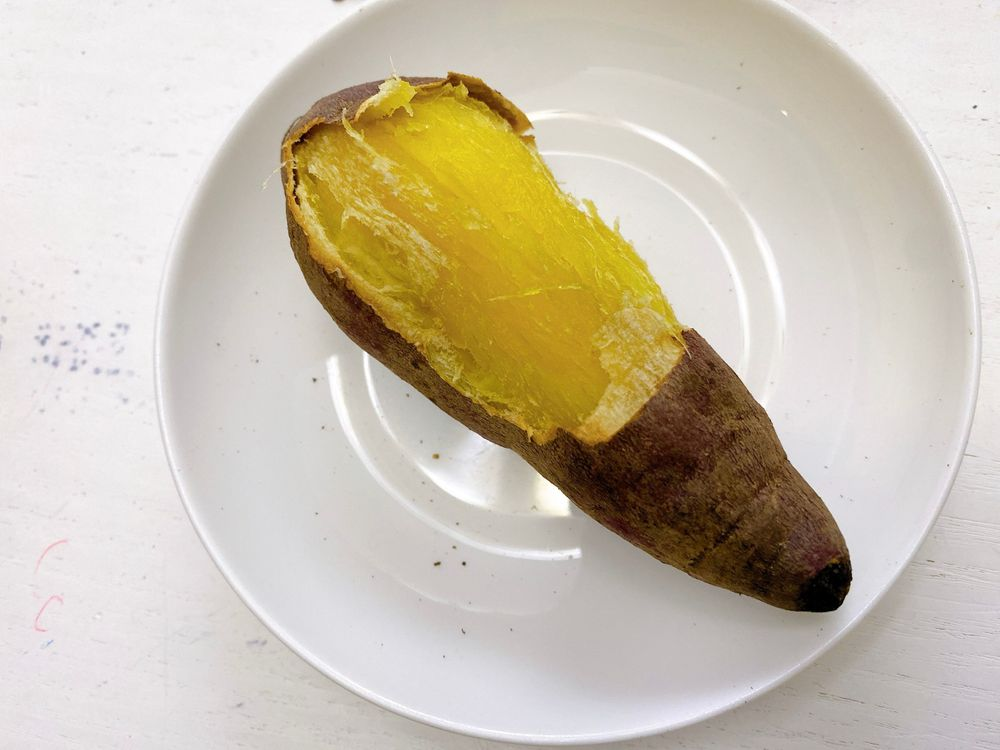
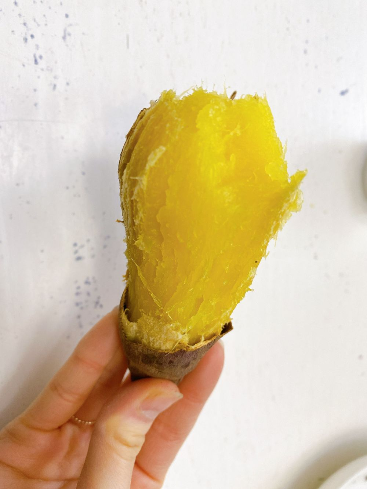

こんにちは😀
ひいだよ🍓

焼き芋🍠🍠🍠
ノンフライヤーで温めると
石焼き芋みたいにホクホクになるの😳
이호のお家にはノンフライヤーある？
韓国では一家に一台っていうイメージ💡
だからノンフライヤーレシピとか
結構あるんだよ！！
豚のモクサル…(日本語だとなんだ?) とかも
ノンフライヤーで焼いたり〜🐖
エッグタルトとかも
ノンフライヤーで温めて食べたり🥧
一家に一台あると便利よ😉
さつまいもの話に戻るけど
クリームチーズつけて食べると
美味しいって聞いてやってみたら
本当に美味しかった🥺✨
이호もやってみて☺️
ではまたっ
나 오늘 고구마 먹었오🍠🍠🍠
에어프라이어에 넣고 굽굽 하면 진짜 맛있어ㅜ
거기에 크림치즈 발라서 먹으면...
단짠단짠🥺
이호 집에 에어프라이어 있지?!
꼭 해봐ㅠㅠㅠㅠ
에프 있으면 진짜 다양한 음식을
맛있게 먹을 수 있는 것 같아👩🏻🍳🍳
에프 넘 조아ㅏㅏ👀🧡
TMI💡
오늘도 내가 싫어하는 운동 했어...
진짜 힘들었어ㅎ
추천메뉴는...
고구마 피자 🍕
하... 나 이제 피자도 자주 못 먹겠네...🥲

ばいばーい👋🏻
ひいまる🥟